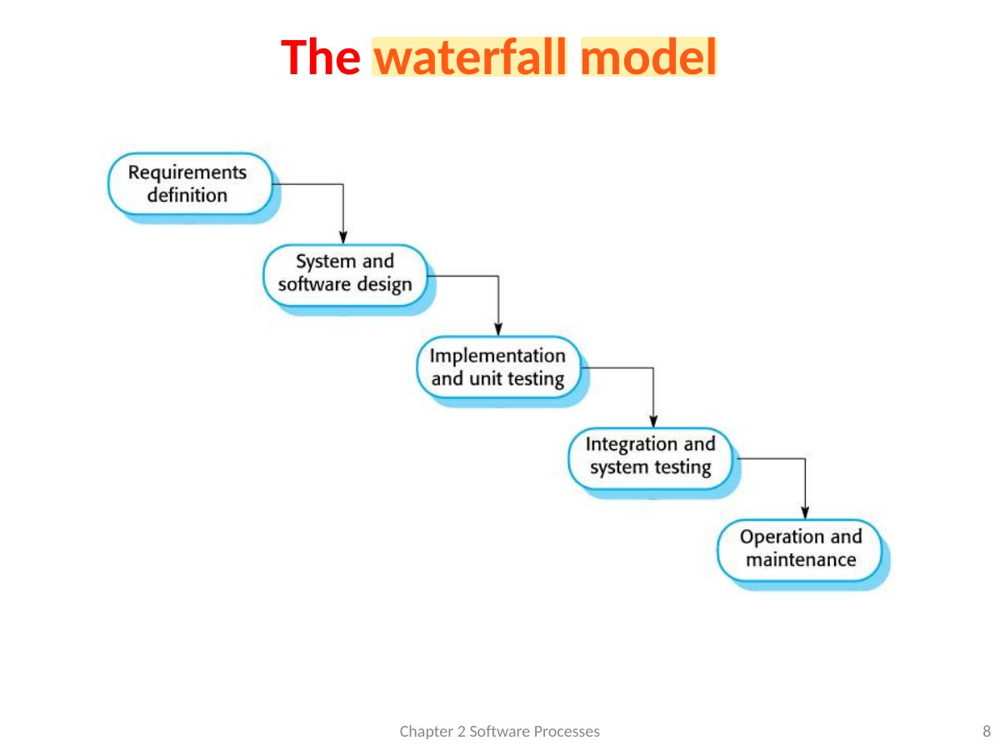
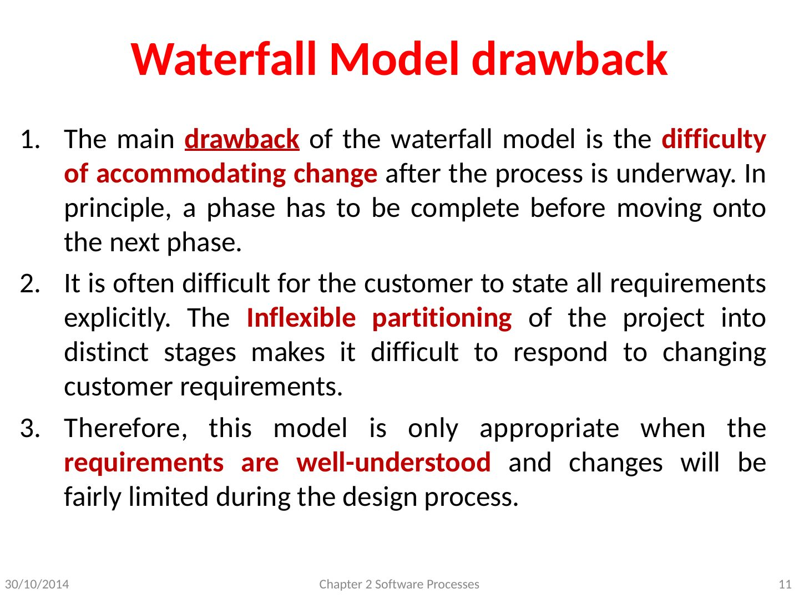
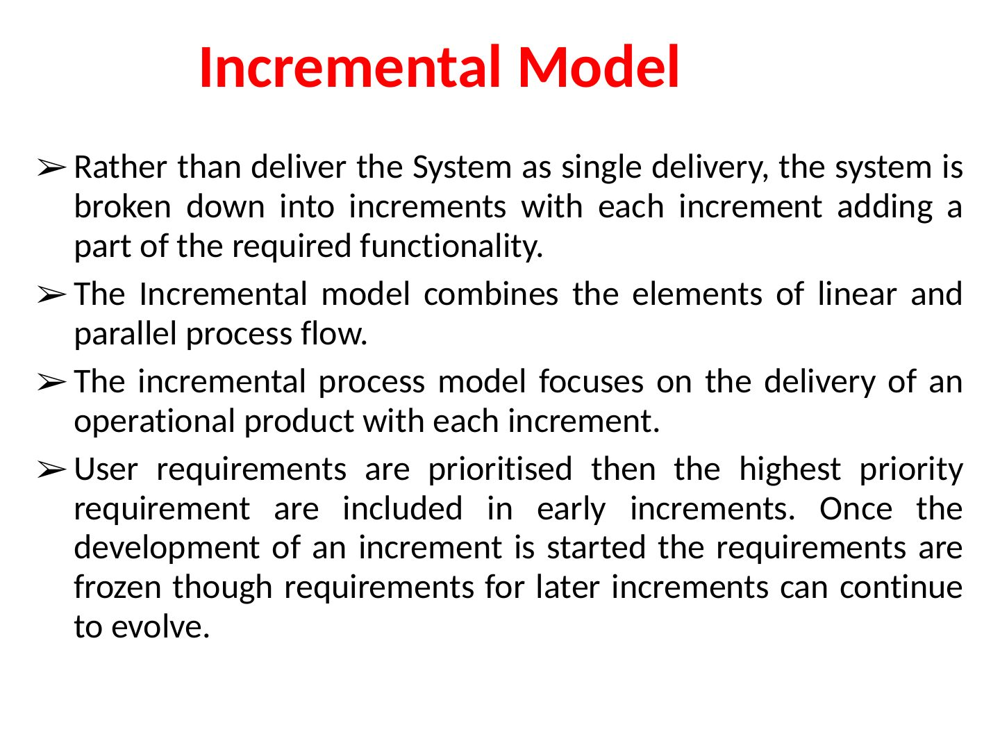
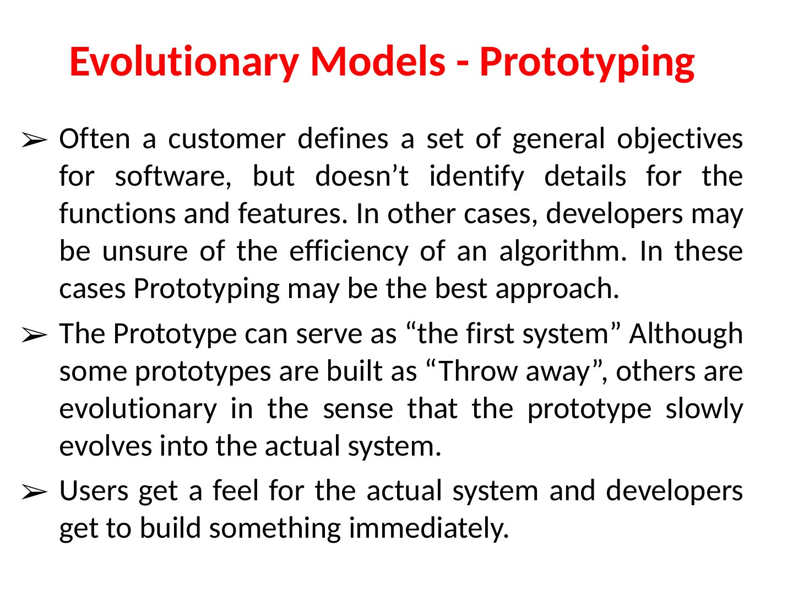
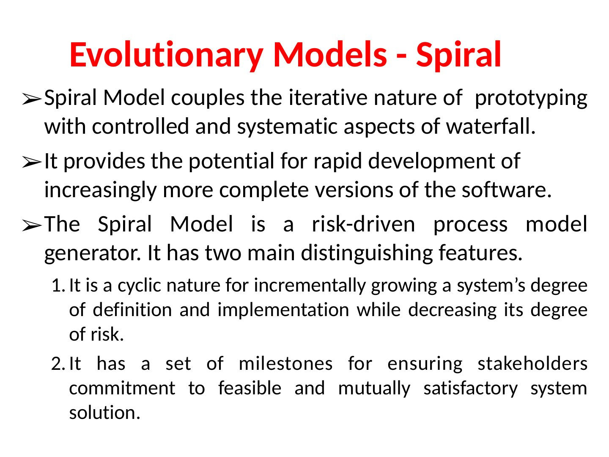
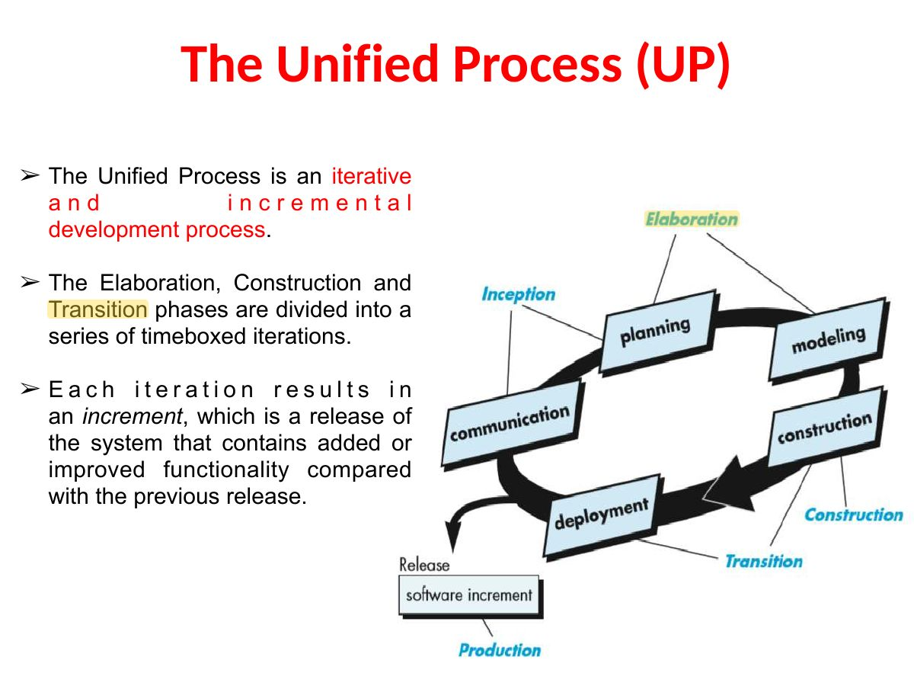
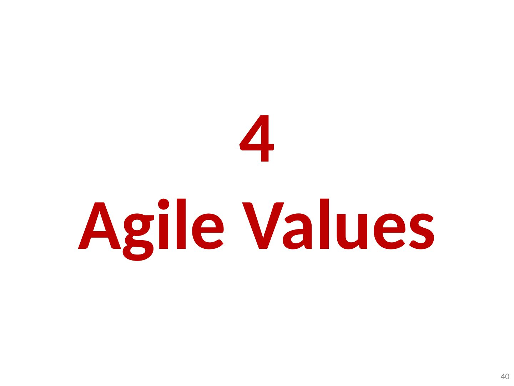
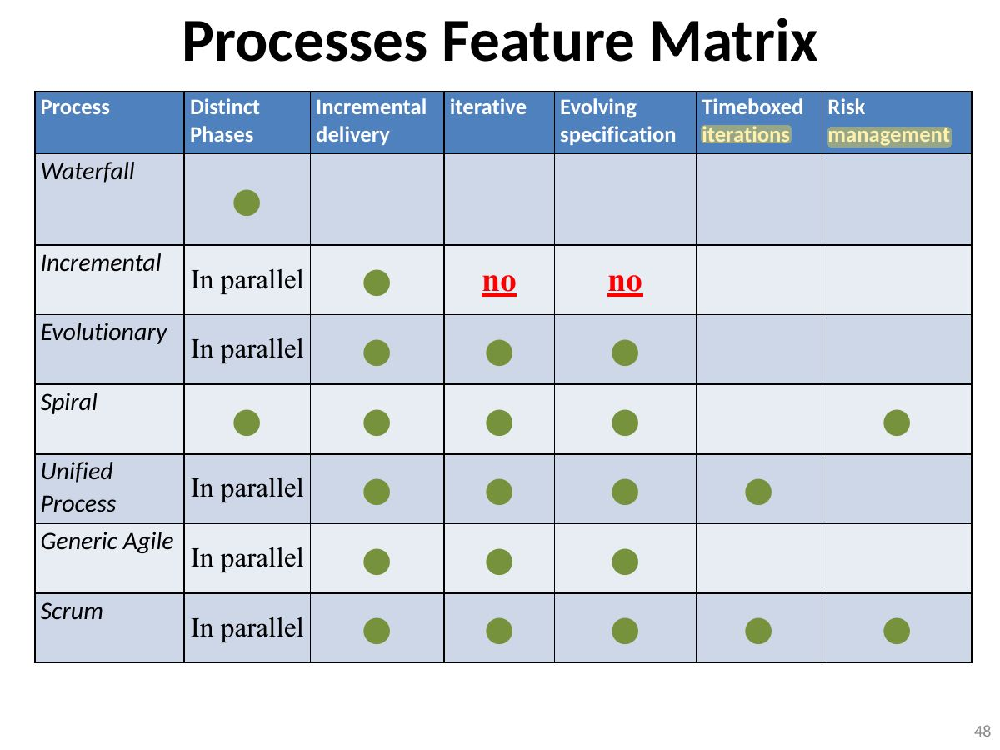

The waterfall model is most appropriate when:
Software Processes
Software process descriptions, plan-driven vs. agile processes, the waterfall and modified waterfall models, incremental development, evolutionary models (prototyping, spiral), component-based and reuse-oriented development, the Unified Process, and the Agile manifesto values and principles.
How to read this page
Every original slide is shown unchanged. Yellow marks on a slide point to a numbered note: hover or tap a mark to jump to its note, and hover a note to see its marks. Questions tagged Past exam appeared on a real paper; Prediction questions are likely angles, not confirmed. Pick an answer to each question: a wrong pick tells you why it is wrong, so you can try again.
All 49 slides
- 1 Software Engineering
- 2 Course Learning Outcome
- 3 The Software Process
- 4 Software Process Descriptions
- 5 Plan-Driven and Agile Processes
- 6 Traditional/Planned
- 7 Software Process Models
- 8 The waterfall model
- 9 Waterfall model phases
- 10 When to Use Waterfall Model
- 11 Waterfall Model drawback
- 12 Modified Waterfall
- 13 Incremental Model
- 14 Incremental Model
- 15 Incremental Model Activities
- 16 Incremental Model Benefits
- 17 Incremental Model Problems
- 18 Evolutionary Model
- 19 Evolutionary Models - Prototyping
- 20 Evolutionary Models - Prototyping
- 21 Evolutionary Models - Prototyping
- 22 Evolutionary Models - Prototyping
- 23 Evolutionary Models - Spiral
- 24 Evolutionary Models - Spiral
- 25 Evolutionary Models - Spiral
- 26 Slide 26
- 27 Component-Based Development
- 28 Component based development
- 29 Types of reusable software
- 30 Reuse-oriented software engineering
- 31 Reusability Advantages and disadvantages
- 32 The Unified Process (UP)
- 33 The Unified Process (UP)
- 34 The Unified Process (UP)
- 35 The Unified Process (UP)
- 36 Agile
- 37 Agile software engineering
- 38 Agile Manifesto Values, Principles, and Common Practices
- 39 Agile Manifesto and Mindset
- 40 Slide 40
- 41 The Four Values of the Agile Manifesto
- 42 Slide 42
- 43 The Twelve Principles Behind the Agile Manifesto
- 44 The Twelve Principles Behind the Agile Manifesto
- 45 Agile is a Blanket Term for Many Approaches
- 46 Key points
- 47 Key points
- 48 Processes Feature Matrix
- 49 Key points
The waterfall model

Notes
-
Waterfall: separate sequential phases; each must finish before the next. Good when requirements are well understood and stable.
Exam angle
Waterfall Model drawback

Notes
-
Drawback: inflexible partitioning makes it hard to respond to changing requirements; working software appears late.
Incremental Model

Notes
-
Incremental: deliver the system in increments; each adds functionality. Combines linear sequences applied in parallel (staggered).
Exam angle
incremental = linear + parallel flow
The incremental model combines elements of linear and parallel process flow.
Evolutionary Models - Prototyping

Notes
-
Prototyping: build a quick version to clarify requirements when they are fuzzy. Risk: customers think the prototype is the product.
Exam angle
Prototyping is most useful when:
Evolutionary Models - Spiral

Notes
-
Spiral (Boehm): iterative loops of planning, RISK ANALYSIS, engineering and evaluation. Risk-driven.
-
Memory trick Spiral = risk-driven.
Exam angle
Which process model is explicitly risk-driven?
The Unified Process (UP)

Notes
-
Unified Process: use-case driven, architecture-centric, iterative and incremental. Phases: inception, elaboration, construction, transition. Requirements are refined across phases.
Exam angle
requirements across UP phases
The four phases of the Unified Process are:
Slide 40

Notes
-
Agile values: individuals and interactions over processes and tools; working software over documentation; customer collaboration over contract negotiation; responding to change over following a plan.
-
Trap The manifesto says the items on the right still have value; the left is valued MORE.
Exam angle
Which is an Agile Manifesto value?
Processes Feature Matrix

Notes
-
Feature matrix: compare models by requirements stability, customer involvement, risk, delivery speed.